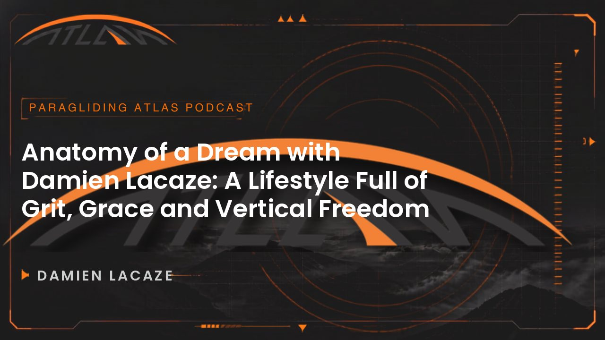
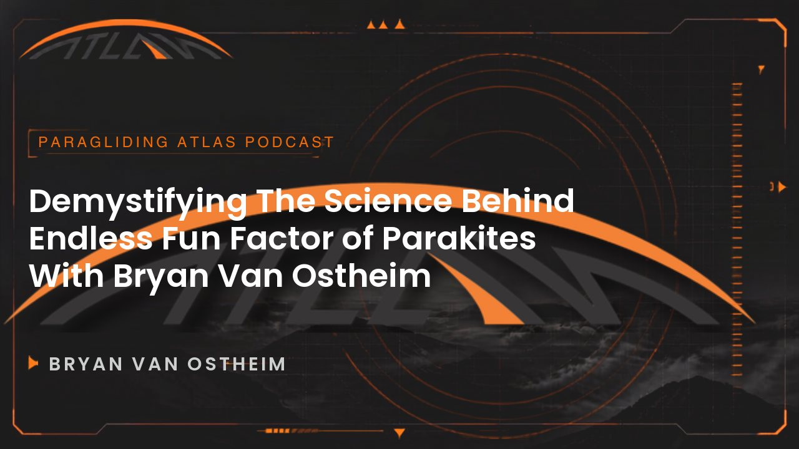
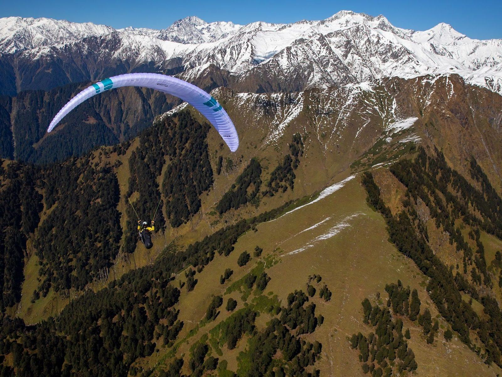

The Atlas Kit
Every page is assembled from these parts. If a page needs something that is not here, it is added here first, then used. That is the whole rule.
1 · Type
--fs-displayTouch The Sky--fs-h1Page title--fs-h2Section title--fs-h4Card title--fs-leadIntro paragraph, one or two sentences, never more.--fs-bodyRunning text. Comfortable measure, about sixty to seventy characters a line.--fs-microKicker · always orange, always above a title1b · The instrument font (v4)
DM Mono, DM Sans's monospaced cousin (SIL Open Font License, self-hosted, 8.9 KB a weight). Only for what an instrument would print; titles, running text and the outlined stat numerals stay as they are.
--font-mono2,400 m 188° 1,468 kmcoordinates32.04°N 76.72°E5,648 km E of Oslotimestamps00:00 15:12 1:03:31readouts- Front range cloudbase
- 3-3.6 km
- Strong, midday peaks
- 4-6 m/s
stats- Episodes
- 86
- Listening
- 84h 39m
2 · Colour
--bg--card--white--gray-light--gray--orange--sky-warm--sky-coolOrange is the accent and appears sparingly: kickers, one button per group, brackets, the horizon. The two sky tokens change with the visitor's time of day.
3 · Section header (the only one)
Fly Where The Mountains Are The Story
Every section opens like this: kicker, title, one intro line. Left aligned. Centred only for a single-idea section with nothing beside it.
For A Single Idea
Used sparingly, never twice in a row.
4 · Hero: media (photo or video)
One Line Of Headline
One sentence that says what this page is for.
5 · Buttons
One solid button per group, at most. The outlined one is the alternative.
6 · Card 1: lit panel (words only)
Small groups
Lit from the bracket corner, a top rule that fades. No box.
Named guides
Use for reasons, promises, facts, anything that is words.
Safety first
Three or four in a row, never a single one on its own.
7 · Card 2: media card (picture, then words)

Episode title sits here, two lines at most
One or two sentences of summary, ending on a whole sentence.

Episode title sits here, two lines at most
One or two sentences of summary, ending on a whole sentence.
Episode title sits here, two lines at most
One or two sentences of summary, ending on a whole sentence.
9 · Card 4: feature block (big picture beside the words)

A Journey Over The Cradle Of Humankind
The picture dissolves into the words. Flip it on the next one.

The Wall Of The Himalaya Above Bir
Flipped: picture on the right, fading left.
11 · Tools: search, filters, sort (library)
One filter pressed at a time, orange when on. Fields 48px tall and 16px text, so phones never zoom.
12 · Pager
13 · Form field
14 · Rail
A native horizontal scroller (finger, trackpad, keyboard) with snap and ends that dissolve. Arrow buttons only under a mouse and only when there is somewhere to go. Nothing moves on its own: no marquee, nothing running off screen. Used for the homepage episodes and the podcast testimonials.
15 · Motion: one flight across the site
- Altitude. Homepage highest, section pages a level down, episodes, topics and categories lowest. Going deeper descends, going back climbs, same level glides.
- Into the picture. A destination's picture on the homepage grows into that destination's hero.
- Scroll is a camera. The hero falls behind you with cloud passing up through it; pictures sit deeper than words; headers are wiped in, cards surface as you reach them.
- Touch. Under a mouse, cards tilt towards the pointer and carry a soft light; the hero sky follows the pointer; rails lean with their momentum.
- The instrument. Altitude and heading in the right margin on wide screens, once the hero is behind you.
- Wind. Optional sound from the header button, off until asked for, remembered, silent in a hidden tab.
- Rules. Nothing runs on its own: every frame comes from a scroll, a pointer or a page change. Reduced motion: none of it. Save-Data and 2G/3G: no video.
15b · Words on a photo, and the two pages built on it
- No box on a photo. A shade behind the words, darker on their side; small orange text there uses
--orange-lite. - Fly-through (home): one picture held on screen while each trip passes over it; the section heading is its first frame.
- Episode page (example): the player beside the title on every episode; quote and guest card in one row below.
- The full rules:
docs/v2-design-rules.md.
16 · Rules
- Structure is shared, character is not. The knowledge base door, the Kenya photo sequence, the library's stone tiles, the booking card and the globe keep their own design.
- Every section opens with the one section header. No other heading styles.
- Every band has the same padding (
--sp-section) and width (--measure). - Four card types and nothing else: lit panel, media card, list row, feature block.
- Nothing ends in a hard edge unless it is a card; lines fade at their ends.
- One solid button per group. Touch targets 44px. Text never below 11px.
- A new pattern is added to this page first, then used.
- Reduced motion: nothing moves. Save-Data and 2G/3G: no video.